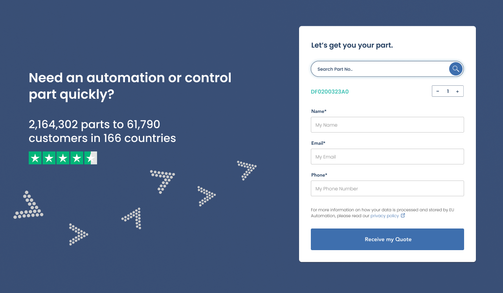
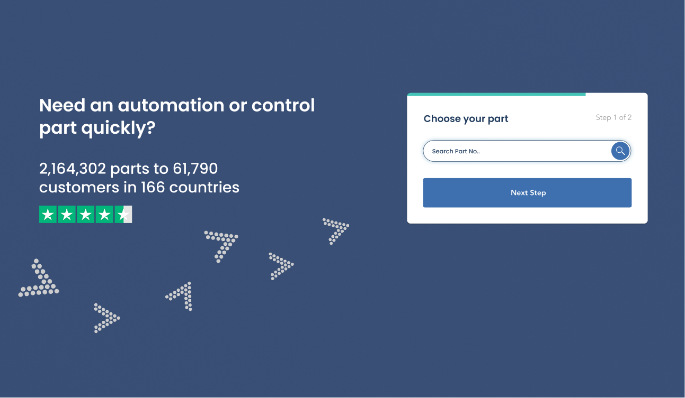
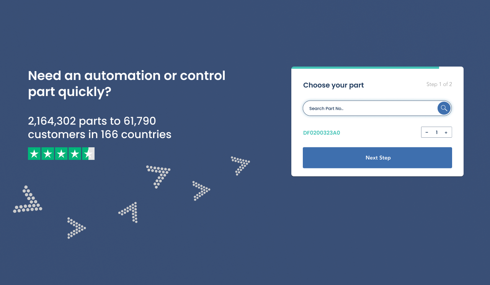
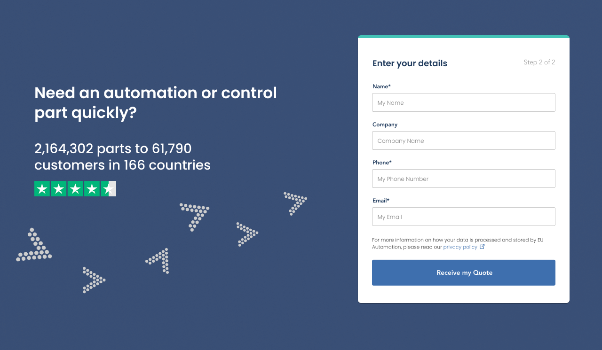

Conversion Form Exploration
Hero Enquiry Form Optimisation
An exploration of form structure and placement to improve lead capture in high-visibility areas without overwhelming first-time visitors.




Context
Marketing wanted to introduce an enquiry form directly within the hero section of the company website to capture leads earlier in the user journey. Because this would be one of the first elements users see when landing on the page, there was a focus on ensuring it felt approachable and quick to complete.
The intention was to increase the likelihood of enquiry submissions without making the first interaction feel overwhelming.
I worked closely with the marketing team to understand their lead capture goals and explore a structure that balanced visibility with usability.
Problem
The proposed form contained around five fields, which is not particularly long. However, placing a full form directly in the hero section introduces a different challenge. Even a short form can feel demanding when it is the first interaction presented to a user.
There was a risk that showing all fields at once could feel like an immediate commitment and discourage engagement, particularly for users who had only just arrived on the page and were still orienting themselves.
Because the form sat in the hero, it needed to feel lightweight and inviting rather than demanding, as this area shapes the user's first impression of the brand.
The goal was to explore a structure that could make the interaction feel lighter, quicker, and more guided.
My Role
I was responsible for exploring alternative form structures and proposing an approach that could support future A/B testing. This involved considering user behaviour, perceived effort, and how early interactions shape engagement.
Constraints
- The form needed to remain concise due to its placement in the hero section
- Page height and layout could not be significantly expanded
- Most fields were predefined based on business and sales requirements
- The solution needed to work cleanly across both desktop and mobile
These limitations meant the focus was not on reducing the number of fields, but on improving how the interaction felt.
Approach
I created a multi-step form concept designed to break the interaction into smaller, more approachable stages.
Step 1
Focused on a simple, low-effort action such as choosing relevant parts or areas of interest.
Step 2
Collected company details and contact information.
I also introduced visible step indicators to show users how many steps remained. The intention was to make the process feel short and predictable, reassuring users that the form would only take a moment to complete.
This approach was positioned as an alternative to the single-view form, where all five fields would be displayed at once.
Thinking Behind the Exploration
Although the total number of fields was relatively small, the context of placement influenced the design decision.
Forms that appear immediately in a hero section can feel more intrusive than those encountered later in a journey. Breaking the process into steps can reduce the perceived effort by:
- Making the first action feel simple and low commitment
- Building momentum before asking for more detailed information
- Guiding users through the process rather than presenting everything at once
- Reassuring users that the interaction will be quick through visible progress indicators
Another reason for exploring a multi-step approach was the sense of interactivity it could introduce. Rather than presenting a static block of fields, the step-by-step structure creates small moments of movement and response as users progress.
This subtle interaction can make the experience feel more dynamic and guided, particularly in a hero section where first impressions are formed quickly. Each step gives the user a sense of forward motion, which can make the company feel more active, responsive, and modern.
Instead of feeling like they are completing a form, users move through a short, structured interaction that feels closer to a human-like conversation. This can help create the impression that the platform is well maintained and thoughtfully designed, even through something as simple as an enquiry flow.
The aim was not to complicate the experience, but to explore whether structuring the interaction differently could make the form feel more inviting and less demanding at first glance.
Alternative Direction
Alongside the multi-step concept, the standard single-view form remained a valid option. With only five fields, it was still reasonable to present everything at once.
Given the relatively small number of fields, the single-view form remained a simpler and practical baseline. The multi-step approach was explored as a behavioural experiment rather than a definitive replacement.
The exploration was intended to support a potential future A/B test between:
- A single-view form with all fields visible
- A multi-step version designed to reduce perceived friction
Outcome
This work was positioned as a forward-looking exploration rather than a final implemented solution. It gave the marketing team a considered alternative that could be tested in the future to better understand user behaviour and form completion preferences.
It also helped shape internal thinking around how form structure, placement, and perceived effort can influence engagement, particularly in high-visibility areas like the hero section.
What I Learned
Even short forms can feel demanding when placed at the very start of a journey.
Perceived effort often matters as much as actual effort.
Small structural changes can significantly influence how approachable an interaction feels.
Constraints often shape the solution more than the ideal design does.
Explorations and test ideas are a valuable part of improving conversion, even before anything is shipped.